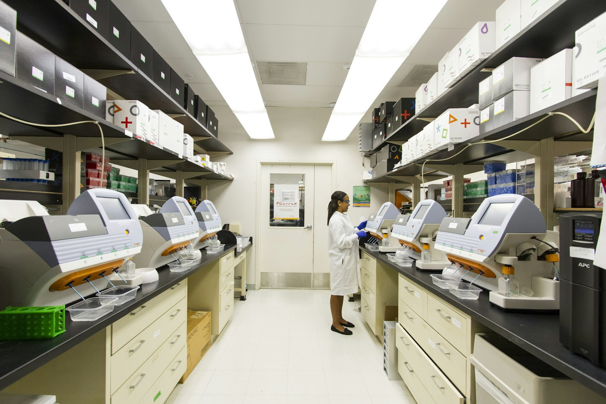
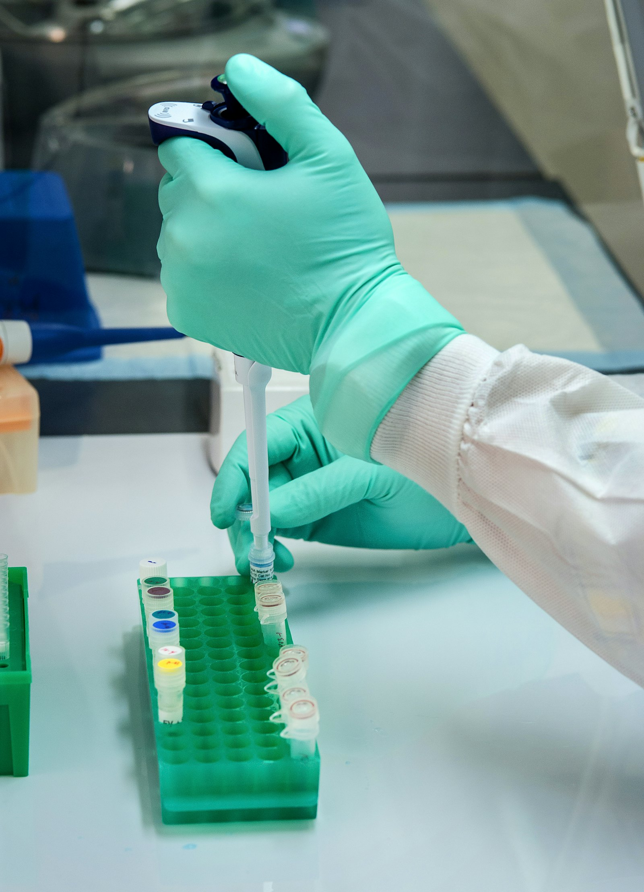

Preclinical research.
Pharmacology, efficacy, safety and DMPK studies that tell you whether a candidate should progress, and at what dose. BioVeritas designs the package and oversees conduct at qualified partner facilities.
Four services, one preclinical package.
Commission a single study or a sequenced package in which each result informs the next design.
Receptor binding, cytotoxicity and mechanism-of-action assays in 2D & 3D cell models, with GLP-aligned study processes where applicable.
Disease-relevant efficacy, PK/PD and proof-of-concept studies in rodent and selected non-rodent models through qualified partner facilities.
Acute, repeat-dose, DART, genotoxicity and safety pharmacology, structured around applicable OECD Test Guidelines and ICH S-series guidelines.
Absorption, distribution, metabolism and excretion; CYP450 interactions; plasma protein binding; tissue distribution and DDI assessment.
Where each study fits.
A typical preclinical sequence. The order and scope are set by your molecule or product, its route and its intended population.
In-vitro screening
Target engagement, potency, selectivity and early cytotoxicity to confirm the candidate is worth taking further. In-vitro
PK & ADME
How the candidate is absorbed, distributed, metabolised and eliminated, and its interaction potential. PK & ADME
In-vivo pharmacology
Proof of concept in disease-relevant models, read alongside exposure to inform dose selection. In-vivo
Toxicology & safety pharmacology
Studies sized to the intended clinical duration, route and population, as required for the next stage. Toxicology
Clinical or regulatory readiness
Integrated interpretation and reporting for the first-in-human, product-safety or submission decision. Translational
Study coordination
BioVeritas designs the programme, selects and qualifies the study facility, and remains accountable for sponsor-facing scientific oversight. Formal Study Director responsibilities remain with the qualified test facility where GLP requires it.
Animal studies run at CPCSEA/CCSEA-registered facilities through qualified partners, with IAEC approval before study start. Designs follow ARRIVE 2.0 reporting principles, and the 3Rs are applied in every protocol.


Design the programme
Protocol, species, endpoints and guidelines agreed against the next clinical decision.
Qualify the facility
Capability, registrations and quality systems checked before work is placed.
Oversee conduct
Milestone reviews, deviation handling and sponsor updates throughout the study.
Review and report
Data review, scientific interpretation and a decision-ready report.
BioVeritas leads
- Programme and protocol design
- Facility selection and qualification
- Sponsor-facing scientific oversight
- Data review, interpretation and reporting
Qualified partner facility
- Study conduct at the registered site
- CPCSEA/CCSEA registration and IAEC approval
- Formal Study Director, where GLP requires
- Raw data generation and archiving
Typical standards, by study type.
Applicable guidelines are selected study by study. The table shows typical references, not a fixed requirement list.
| Study type | Standards / guidelines | Typical deliverables |
|---|---|---|
| In-vitro assays | Qualified methods · GLP-aligned where applicable | Ki, Kd, IC50/EC50, viability and mechanism data |
| In-vivo pharmacology | IAEC · CPCSEA/CCSEA · ARRIVE 2.0 | Efficacy and PK/PD report with raw data |
| Acute toxicity | OECD TG 420 · 423 · 425 · 402 · 403 | Study report, raw data, dose–response |
| Repeat-dose toxicity | OECD TG 407 · 408 · 409 · 452 | Pathology findings and study-specific endpoints |
| Reproductive toxicity | OECD TG 414 · 416 · 421 · 422 · 443 | Embryo-fetal and generational endpoints |
| Genotoxicity battery | OECD TG 471 · 473 · 474 · 487 · 489 | Ames, micronucleus, comet reports |
| Pharmacokinetics | Non-compartmental analysis · FDA/EMA DDI guidance | Cmax, Tmax, AUC, t½, clearance, IC50 / fold induction |
| Nonclinical programme planning | ICH M3(R2) · ICH S-series | Study package aligned to the clinical plan |